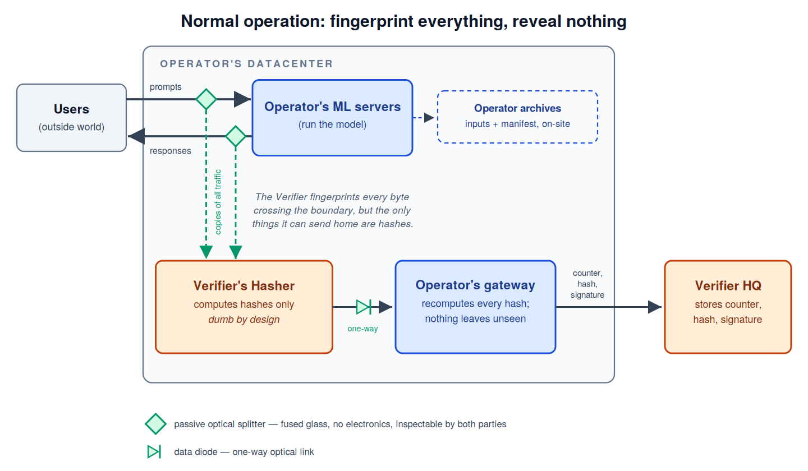
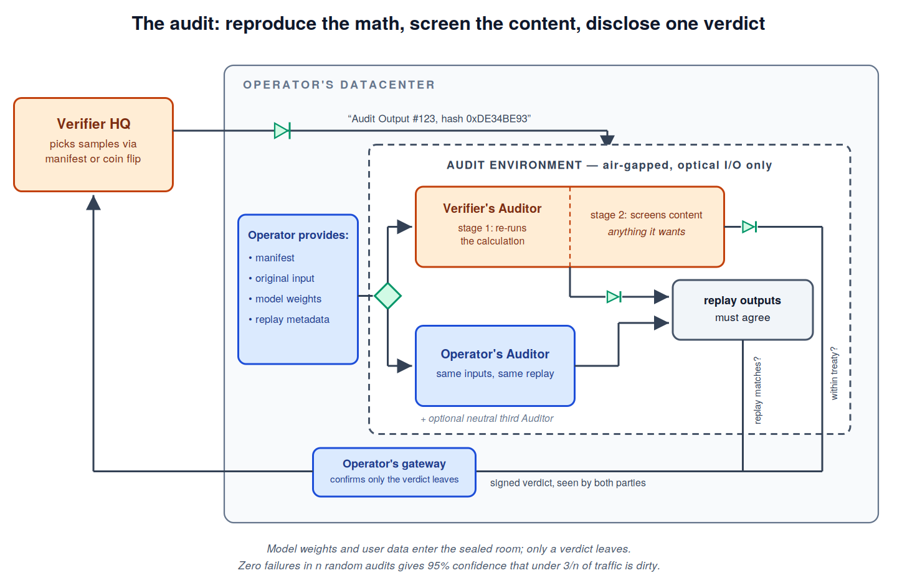

The field nobody has heard of, with only ≈25 people working on it full-time.
Any agreement about AI, whether between the US and China or between a government and a lab, is only worth anything if each side can check that the other is keeping it. We only can make a deal if we can verify that the deal is being kept. For nuclear weapons we solved this decades ago: American inspectors were outside a Russian missile factory for twenty years, x-raying any container big enough to hold a banned missile, and Russian inspectors did the same in Utah. Precisely because we could verify, we were able to keep a treaty in the absence of trust.
"Compute verification" is the AI equivalent: confirming that a data center is doing what its owner says it is doing, without either side exposing its models or its data. It's what lets "pacing" go from a press release into an actual commitment.
I dug through all of the research papers I could find on it, about 60 papers total (few enough to read literally all accumulated knowledge of the field in a week or so). Depending on how you slice the numbers, there are about 72 researchers actively working on the problem, and most aren't full-time; my estimate of the global population working on it is around 25 full-time equivalents. (Canary Institute survey, September 2026; QR below.)
Much of the work which is needed already exists, from fields like nuclear safeguards and cryptography, but the people who created it aren't aware of AI risk, and the funders supporting AI risk aren't aware of the creators. The game theory for how often you need to inspect in order to catch a cheater was developed for nuclear arms control (Avenhaus and Krieger). The "covert adversary" model that AI-treaty papers now use as their threat model was written by two cryptographers in 2007 (Aumann and Lindell). No one has shown up on their doorsteps asking them to port the work.
The field keeps its own to-do list: RAND's six-layer verification report, the Proofworks project list, and the AI-2040 verification plan all identify concrete hardware tasks with person-year estimates attached. Passive optical taps that can see 800-gigabit traffic. Tamper-evident enclosures that retrofit onto existing racks (2–10 person-years). Provable memory wiping. A standing red team for the whole regime, which today does not exist anywhere. The cryptographic layer (proving what a chip computed without revealing it) is longer-term research, but a first-generation regime built on physical inspection doesn't need it. See reverse for one such design.
The public is growing increasingly concerned about risks from AI, both economic and existential. Amodei called on the industry to "pace the frontier", and Altman, Musk, and Hassabis endorsed within hours. China has begun showing signs that it is open to dialogue. Our current situation is akin to a stampede, in which no one can stop because no one else is stopping. The technology to slow that stampede is almost within our grasp, but we need to direct research time and attention to it.
| Mauricio Baker, RAND | Lead author, Verifying International Agreements on AI: Six Layers of Verification (RAND WR-A4077-1, 2025); the most detailed technical map of the field. |
| Tim Fist, Institute for Progress | Coauthor, Secure, Governable Chips (CNAS, 2024), on hardware-enabled mechanisms. |
| Dan Parshall, Canary Institute | dan@canaryinstitute.ai · field survey and the problem list at canaryinstitute.ai/blog/most-important-problem |
A design for letting an adversary check what your data center is doing, without letting them steal anything.
Even over decades of arms-control talks between the USA and Russia, we never achieved an agreement on a chip design that both sides could trust. But each side felt safe trusting its own domestic chips. So the Glass Perimeter is built on three principles: nobody wants to risk their models or data getting stolen; adversaries CAN agree to physical inspection; and mutually-trusted silicon is (likely) a non-starter.
The workaround is that anytime you want to share data, you use an optical splitter, which has no electronics and can't do anything to change the signal. To send, you use a pulsed LED; to receive, a photosensor. Your electronics never touch theirs. Because the boundary between the two parties is literally glass, I call it the Glass Perimeter.

The owner of the data center is the Operator; the adversarial counterparty is the Verifier. Each output file leaving the building runs through the optical splitter, and one copy goes to a computer owned by the Verifier (the "Hasher"), which calculates the hash of the output file. The Hasher is allowed to see everything exiting the building, but it is only allowed to send three things out: a counter identifying the output number, a hash of the output file, and a signature.
That outbound message passes back through the Operator, who can see the hash and signature, so they know that no secrets are being exfiltrated, and who can recompute the hash themselves to confirm the Verifier didn't sneak anything in either.

Thousands of times each day, the Verifier's home base sends in a message saying "We want to audit Output #123" (it's always the Verifier who decides which outputs to audit). The Operator sends a copy of the data needed to reproduce the audited calculation (the original input, the model weights, etc.) into a dedicated "Audit Environment" inside the data center. The parties never have to share chips; they communicate only through optical links.
The Verifier's computer can do any analysis it wants at this point (e.g. confirming no instructions for CBRN dangers or recursive-self improvement), but all that leaves the room is a signed message providing yes/no answers for: Did the input files reproduce the hash? Was the response within treaty?